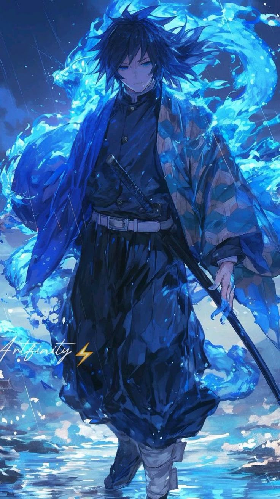

navbar example



crunchyroll link here
Hello my otaku fans
ああ、ああ
Aa, aa
ああ、イェー
Aa, yē
へい
Hei
ゆびきりげんまん ほらでもふいたら
Yubikiri genman hora demo fuitara
はりでもなんでも のませていただき Monday
Hari demo nande mo nomasete itadaki Monday
It doesn't matter if it's Sunday
かがみよ かがみよ このよでいちばん
Kagami yo kagami yo kono yo de ichiban
かわることのない あいをくれるのはだれ
Kawaru koto no nai ai wo kureru no wa dare
No need to ask 'cause it's my darling
わたしのさいごは あなたがいい（いい
Watashi no saigo wa anata ga ii (ii)
あなたとこのまま おさらばするより
Anata to kono mama osaraba suru yori
しぬのがいいわ
Shinu no ga ii wa
しぬのがいいわ
Shinu no ga ii wa
さんどのめしより あんたがいいのよ（いい
Sando no meshi yori anta ga ii no yo (ii)
あんたとこのまま おさらばするよか
Anta to kono mama osaraba suru yoka
しぬのがいいわ
Shinu no ga ii wa
しぬのがいいわ
Shinu no ga ii wa
それでもときどき うわつく my heart
Soredemo tokidoki uwatsuku my heart
しんでもなおらな なおしてみせます、baby
Shin demo naoranai naoshite misemasu, baby
Yeah, I ain't nothin' but ya, baby
うしなってはじめて きがつくなんて
Ushinatte hajimete kigatsuku nante
そんなださいこと もうしたないのよ goodbye
Sonna dasai koto mou shinai no yo goodbye
Oh, don't you ever say: Bye, bye
Yeah, yeah
わたしのさいごは あなたがいい（いい
Watashi no saigo wa anata ga ii (ii)
あなたのこのまま おさらばするより
Anata no kono mama osaraba suru yori
しぬのがいいわ（しぬのがいいわ
Shinu no ga ii wa (shinu no ga ii wa)
しぬのがいいわ（しぬのがいいわ
Shinu no ga ii wa (shinu no ga ii wa)
さんどのめしより あんたがいいのよ（いい
Sando no meshi yori anta ga ii no yo (ii)
あんたのこのまま おさらばするよか
Anta no kono mama osaraba suru yoka
しぬのがいいわ（しぬのがいいわ
Shinu no ga ii wa (shinu no ga ii wa)
しぬのがいいわ（しぬのがいいわ
Shinu no ga ii wa (shinu no ga ii wa)
わたしのさいごは あなたがいい
Watashi no saigo wa anata ga ii
あなたのこのまま おさらばするより
Anata no kono mama osaraba suru yori
しぬのがいいわ（しぬのがいいわ
Shinu no ga ii wa (shinu no ga ii wa)
しぬのがいいわ（しぬのがいいわ
Shinu no ga ii wa (shinu no ga ii wa)
さんどのめしより あんたがいいのよ
Sando no meshi yori anta ga ii no yo
あんたのこのまま おさらばするよか
Anta no kono mama osaraba suru yoka
しぬのがいいわ（しぬのがいいわ
Shinu no ga ii wa (shinu no ga ii wa)
しぬのがいいわ（しぬのがいいわ
Shinu no ga ii wa (shinu no ga ii wa)
それでもときどき うわつく my heart
Soredemo tokidoki uwatsuku my heart
そんなださいのは もういらないのよ bye, bye
Sonna dasai no wa mou iranai no yo bye, bye
I'll always stick with ya, my baby
words
words
footer